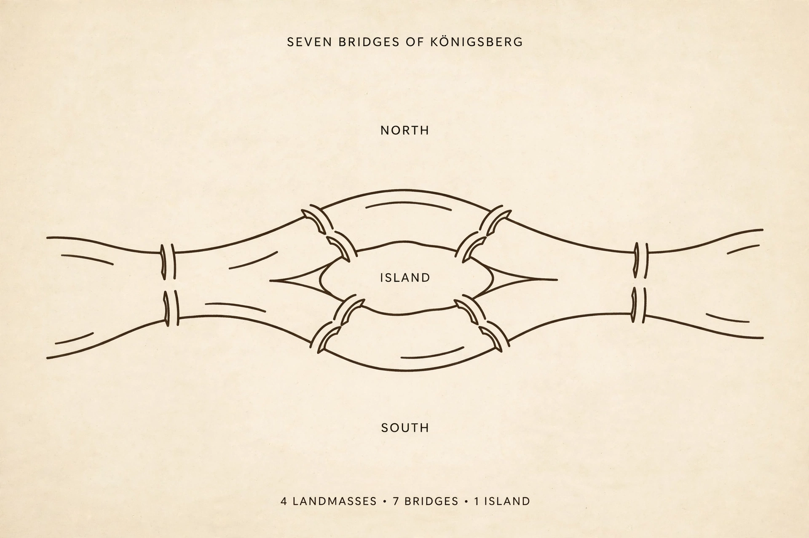

Seven Bridges of Königsberg

[Image: A stylised map of a river with an island and seven bridges connecting the banks]
The Seven Bridges of Königsberg is a historically notable problem in mathematics whose negative solution by Leonhard Euler in 1736 founded graph theory. The city of Königsberg in Prussia (now Kaliningrad, Russia) was set on both sides of the Pregel River, with two islands connected to the banks and each other by seven bridges. The problem: can one walk through the city crossing each bridge exactly once?
Euler realised the layout of land and bridges is all that matters — reducing the city to a diagram of points and lines, he proved the walk impossible: a route using every edge exactly once requires zero or two vertices of odd degree, and Königsberg's diagram has four.
Legacy
The paper is generally regarded as the first in graph theory and a first glimpse of topology — geometry of position, independent of distances and shapes. Two of the seven bridges were destroyed in the Second World War; of the modern bridges, the current graph happens to admit an Eulerian trail.
Eulerian paths and circuits are now routine in routing, DNA assembly and network design.